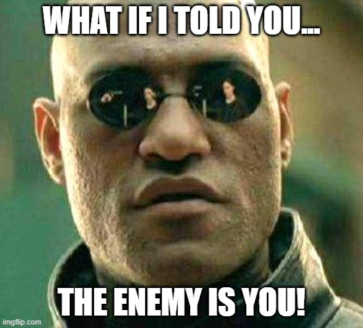

“Everyone of us is shadowed by an illusory person: a false self..We are not very good at recognizing illusions, least of all the ones we cherish about ourselves. Contemplation is not and cannot be a function of this external self. There is an irreducible opposition between the deep transcendent self that awakens only in contemplation, and the superficial, external self which we commonly identify with the first person singular.Our reality, our true self, is hidden in what appears to us to be nothingness….We can rise above this unreality and recover our hidden reality….God Himself begins to live in me not only as my Creator but as my other and true self.”
Thomas Merton, New Seeds of Contemplation
Growing up, I was always taught to believe that the enemy I should be afraid of is “out there” somewhere. In church, it was the devil…on TV it was this war or that war, or the ozone, or whatever narrative they were trying to spin at the time.
Were some of these boogie men legitimate concerns? Sure…they all have some validity. Should one be scared of roaming Chicago at 3am by yourself? You bet! Wars are a stain on our civilization and have destroyed many lives and families. Nowadays, you will be tarred and feathered if you don’t go along with the “climate change” narratives they are selling us.
One thing that these plot lines fed to us by the media and religion, and other “leaders” of humanity, are that most of them are fully external to our sphere of influence. We have very little ability to control or effect these out there issues, but yet it is what they want us focused on 24/7.
Sure we can pray, send good vibes…maybe vote??? 🫡 🤪 😂 But lets be honest….haven’t we been doing these for centuries? Mankind as a whole has very little to show for their efforts to effect the external circumstances of society.
Now have we made great strides sense the “dark ages”? You bet we have…but I think most of us would agree, especially anyone who found their way here…that we still have a long ways to go!!!!
It appears that there has always been an agenda in play from those of the “dark” or “negative” polarities…one that keeps us looking outside of ourselves for safety, comfort, salvation, confidence, self worth, hope, and on and on and on. Everything from our salvation to our happiness exists “out there” somewhere.

What if I told you….the true “enemy” at the gates, the real “problem” with society exists not somewhere out there…but rather withing each and everyone of us??
In this article, we will explore the “adversary” of humanity, or at least the largest hurdle we have to face in order to achieve true awakening, and realize our full spiritual potential.
Table of contents
- The Ego
- The Inward Journey
- Muladhara Chakra/Root Chakra (Red Ray)
- Svadhishthana Chakra/Sacral Chakra (Orange Ray)
- Manipura Chakra/Solar Plexus Chakra (Yellow Ray)
- Anahata Chakra/Heart Chakra (Green Ray)
- Vishuddha Chakra/Throat Chakra (Blue Ray)
- Ajna Chakra/Third Eye Chakra (Indigo Ray)
- Sahastrara Chakra/Crown Chakra (No Law of One color)
- Methods of self reflection
The Ego
Ego noun
the self especially as contrasted with another self or the world
So what is the “Ego”? We will begin by exploring the work that popularized the term.
Perhaps Freud’s single most enduring and important idea was that the human psyche (personality) has more than one aspect.
Freud’s personality theory (1923) saw the psyche structured into three parts (i.e., tripartite), the id, ego, and superego, all developing at different stages in our lives.
These are systems, not parts of the brain, or in any way physical, but rather hypothetical conceptualizations of important mental functions.
Freud’s personality theory divides the human experience into threw parts.
- Id
- Ego
- Superego
The Id is the animal/instinctive side of us…It controls the basic essential drives, like sex, hunger, aggression, etc. Deep rooted traumas and suppressed pain can also take up residence in the Id.
The Superego, according to Freud, acts as our moral compass and helps us determine right from wrong.
This leaves the Ego, which sits in the middle, and tries to mediate between the Id and the Superego.
The ego is the only part of the conscious personality. It’s what the person is aware of when they think about themselves and what they usually try to project toward others.
The ego develops to mediate between the unrealistic id and the real external world. It is the decision-making component of personality. Ideally, the ego works by reason, whereas the id is chaotic and unreasonable.
The ego develops from the id during infancy. The ego’s goal is to satisfy the id’s demands in a safe and socially acceptable way. In contrast to the id, the ego follows the reality principle as it operates in both the conscious and unconscious mind.
The ego operates according to the reality principle, working out realistic ways of satisfying the id’s demands, often compromising or .postponing satisfaction to avoid negative consequences of society.
We will not go further into the Freud’s theory, because my understanding diverges in many ways..however, it appears this was a very insightful concept, and has roots in truth. (Calibrates at 499 on Dr. Hawkins scale of consciousness, and 499 is the peak of human/dualistic understanding according to Hawkins)
We will now explore the function of the ego and try to understand its evolutionary role in our human experience.
Ego Function
So what does the ego do for us? Why was it created, and for what purpose? It appears that ego has served a critical role in the survival of the human race throughout its evolution through 3rd density. The subconscious mind, or Freud’s id, is what I would term the body.
The body is full of sensory inputs….sight, smell, touch, taste, etc. As we move throughout our experience, our body is constantly receiving input from these sensors, that the mind (ego), tries to interpret. This process of interpretation, at the most basic level, consists of labeling. These labels applied by the mind (ego), serve the purpose of helping us determine of the received input is either good or bad for us. For example, touching the hot stove causes the body physical pain in the form of a burn….which the mind (ego) dutifully labels as bad and files that away as something we shouldn’t do.
As we continue to grow and experience, our mind (ego) grows in the amount of data it has processed, and the number of events or inputs it has labeled. This information is typically passed down to us from our parents and other external sources from a young age, thus improving our likelihood of survival.
As you can see, if our understanding of the rise and function of the ego mind is correct….how important of a role it has indeed played, and continues to play for any who are operating from their lower centers only (will cover this later).
So, how can this process of labeling become a hurdle to be overcame?
Ego identification
The “problem” with this labeling function, is it starts to form a false identity. As the mind (ego) labels things, it begins to start claiming them, and once claimed, they are imbued with the special characteristic of mine. This function, in and of itself, is really a natural process, and isn’t inherently bad. It is when we start to identify with the labels, that we begin to see problems that must be overcome along our spiritual journey.
Unlike physical sensory inputs, that are typically fairly black and white, and can mostly fall into the good vs bad polarity, the labeling and claiming of thoughts, tend to be not so black and white.
If you observe your inner dialog, you will notice, that mind (ego) is constantly trying to fill silence with some form of chatter..whether it be a conversation you had yesterday or 5 minutes ago…song lyrics from your favorite TV show…random questions for consideration, and on and on and on. It never really stops, and there is a very good reason for this.
The mind (ego) has a deep, deep fear of silence, and tries to keep us doing things or thinking things, to prevent us being “bored”, which is really just the mind (ego) avoiding silence (more on this later). We needed to touch on this here briefly though, to better understand the random thoughts that we have flooding our mind at all times.
As these thoughts arise, if we do not pay any attention to them, you will notice that they fall away almost instantly. But, once we entertain one, and give it our conscious attention, that the ego begins to label and claim the thought. The ego then files this away, just like other forms of input as something that is good for us, or at least something it got a payoff from. This way, the ego can bring this thought back up again, expecting another payoff and more of your conscious attention.
If we pay more attention to that thought the next time, this thought becomes even more solidified, and starts to become “special” to us. If we continue to give it attention each time, it will eventually cement itself in the mind (ego) as a belief. Once a thought has hardened itself to a belief, it becomes very difficult to dislodge it, and the mind (ego) will fight and defend it, quite fiercely if the belief is strongly held.
As we grow and continue to experience, we start collecting these beliefs, and our collection of these beliefs is what we view as “us”.
This labeling can also pose an issue when it is applied to objects in the physical. For example, a watch is just a watch, until it becomes my watch…once it is mine, it is special to me. This claiming of objects can lead to addictions to objects in the physical, and many times can manifest as greed. This can also cause an issue, where the individual is constantly seeking to acquire more things to label as “mine”, to fill a void, rather than seeking the answers to why the void, or hole in their life exists to begin with.
In the video below, Aaron Abke does a great job breaking this concept of ego vs one’s true self….worth the watch if you want to better understand this process.
Next, we will begin to explore how this can cause a hurdle, and it appears to me, one of the largest to overcome in the third density…
The Inward Journey
“We are living in a culture entirely hypnotized by the illusion of time, in which the so-called present moment is felt as nothing but an infinitesimal hairline between an all-powerfully causative past and an absorbingly important future. We have no present. Our consciousness is almost completely preoccupied with memory and expectation. We do not realize that there never was, is, nor will be any other experience than present experience. We are therefore out of touch with reality. We confuse the world as talked about, described, and measured with the world which actually is. We are sick with a fascination for the useful tools of names and numbers, of symbols, signs, conceptions and ideas.” ― Alan Watts
In order to remove the hurdle of the mind (ego), we must begin to examine ourselves, and start unpacking issues within our lives. For my experience, this began by identifying patterns, and then meditating and contemplating the reason for the patterns, and what lessons they held. A tool that I found most valuable, was the study of, and application of the understandings of the bodily chakras/energy centers. We will overview these centers and their functions from a traditional point of view in chakra theory, and also explore some teachings from the Law of One regarding these centers.
The work of balancing these centers leads you down a path of true self discovery, which will ultimately lead to true self realization and dissolution of duality and ego mind. Although it is not completely necessary to have an understanding of these centers to begin or practice this work of self discovery, it has been a useful tool for myself, so we will approach from this angle. As with anything in creation, there are many paths, and many ways to come to the same realization…so please be sure to understand this isn’t exhaustive by any means, nor is it meant to be.
Muladhara Chakra/Root Chakra (Red Ray)
All descriptions will be pulled from arhantayoga.org
Color: Red
Element: Earth
Location: The Root Chakra also known as the Muladhara Chakra is located at the base of the spine, between the anus and the genitals. It is characterized by the emotions of survival, stability, ambition, and self-sufficiency.
Symptoms of a blocked Root Chakra: When this chakra is out of balance, a person starts feeling unstable, ungrounded, lack of ambition, lack of purpose, fearful, insecure and frustrated.
Signs of a balanced/imbalanced Root Chakra: However, when the Root Chakra is balanced, these are replaced by more positive emotions, and you feel stable, confident, balanced, energetic, independent, and strong.
Svadhishthana Chakra/Sacral Chakra (Orange Ray)
Color: Orange
Element: Water
Location: The Svadhishthana Chakra, more commonly known as the Sacral Chakra, is located in the lower abdomen, about four fingers below the navel. Its attributes include the basic need for sexuality, as well as creativity and self-worth.
Symptoms of a blocked/imbalanced Sacral Chakra: When the Sacral Chakra is imbalanced, a person may feel emotionally explosive and irritable, sense a lack of energy and creativity, feel manipulative, or obsessed with sexual thoughts.
Signs of a balanced Sacral Chakra: When balanced, it makes one feel more vibrant, happy, positive, satisfied, compassionate, and intuitive.
Manipura Chakra/Solar Plexus Chakra (Yellow Ray)
Color: Yellow
Element: Fire
Location: The Manipura Chakra is located at the solar plexus, between the navel and the bottom of the rib cage. It is characterized by emotions like ego, anger, and aggression.
Symptoms of a blocked/imbalanced Solar Plexus Chakra: An imbalance of the Solar Plexus Chakra can manifest physically as digestive problems, liver problems, or diabetes. On an emotional level, one might struggle with depression, lack of self-esteem, anger, and perfectionism.
Signs of a balanced Solar Plexus Chakra: By balancing this chakra, we feel more energetic, confident, productive, and focused.
Anahata Chakra/Heart Chakra (Green Ray)
Color: Green
Element: Air
Location: As the name implies, the Anahata Chakra is located in the heart region. This chakra is the seat of balance, and it is characterized by emotions of love, attachment, compassion, trust, and passion.
Symptoms of a blocked/imbalanced Heart Chakra: When the heart chakra is imbalanced, a person may deal with emotional issues like anger, lack of trust, anxiety, jealousy, fear, and moodiness.
Signs of a balanced Heart Chakra: By harmonizing this energy center, a person begins to feel more compassionate, caring, optimistic, friendly, and motivated.
Vishuddha Chakra/Throat Chakra (Blue Ray)
Color: Blue
Element: Space
Location: The Visuddha Chakra is located at the base of the throat, coinciding with the thyroid gland. It is associated with inspiration, healthy expression, faith, and the ability to communicate well.
Symptoms of a blocked/imbalanced Throat Chakra: A blockage in the throat chakra may be experienced as timidity, quietness, a feeling of weakness, or the inability to express our thoughts.
Signs of a balanced Throat Chakra: When this chakra is balanced, it enables creativity, positive self-expression, constructive communication, and a sense of satisfaction.
Ajna Chakra/Third Eye Chakra (Indigo Ray)
Color: Indigo
Element: None
Location: The Ajna Chakra (pronounced as ‘Agya Chakra’) is located between the eyebrows. Also known as the Third Eye Chakra, it is often used as a focal point during asana practice to develop more concentration and awareness. It is said that meditating upon this chakra destroys the karma of past lives and brings liberation and intuitive knowledge. Its attributes are intelligence, intuition, insight, and self-knowledge.
Symptoms of a blocked/imbalanced Third Eye Chakra: When imbalanced, it may make you feel non-assertive and afraid of success, or on the contrary, it can make you more egotistical. An imbalance can manifest as physical problems like headaches, blurry vision, and eye strain.
Signs of a balanced Third Eye Chakra: When this chakra is active and balanced, a person feels more vibrant and confident, both spiritually and emotionally. In the absence of the fear of death, one becomes his own master and remains free of all attachment to material things.
Sahastrara Chakra/Crown Chakra (No Law of One color)
Law of One has a slightly different view of the crown chakra. We will go into detail later about how their understanding differs from that of yoga
Color: Violet White
Element: None
Location: The Sahastrara or Crown Chakra is located at the crown of the head. The seventh chakra is the center of spirituality, enlightenment, and dynamic thought and energy. It allows for the inward flow of wisdom and brings the gift of cosmic consciousness.
Symptoms of a blocked/imbalanced Crown Chakra: When it gets imbalanced, one might suffer from a constant sense of frustration, melancholy and destructive feelings.
Signs of a balanced Crown Chakra: A balanced Crown Chakra promotes spiritual understanding, inner peace and a clear perspective on the world.
These are the more traditional views and descriptions. The Law of One covers these centers in great depth, and we might cover those in a future article, but for now lets look at the high level descriptions:
15.11 Questioner: Can you tell me how you balance the ego?
Ra: I am Ra. We cannot work with this concept as it is misapplied and understanding cannot come from it.
15.12 Questioner: How does an individual go about balancing himself? What is the first step?
Ra: I am Ra. The steps are only one; that is, an understanding of the energy centers which make up the mind/body/spirit complex. This understanding may be briefly summarized as follows:
The first balancing is of the Malkuth, or Earth, vibratory energy complex, called the red-ray complex. An understanding and acceptance of this energy is fundamental.
The next energy complex which may be blocked is the emotional or personal complex, also known as the orange-ray complex. This blockage will often demonstrate itself as personal eccentricities or distortions with regard to self-conscious understanding or acceptance of self.
The third blockage resembles most closely that which you have called ego. It is the yellow-ray or solar plexus center. Blockages in this center will often manifest as distortions towards power, manipulation, and other social behaviors concerning those close and those associated with the mind/body/spirit complex.
Those with blockages in these first three energy centers, or nexi, will have continuing difficulties in ability to further their seeking of the Law of One.
The center of heart, or green-ray, is the center from which third-density beings may springboard, shall we say, towards infinite intelligence. Blockages in this area may manifest as difficulties in expressing what you may call universal love or compassion.
The blue-ray center of energy streaming is the center which, for the first time, is outgoing as well as inpouring. Those blocked in this area may have difficulty in grasping the spirit/mind complexes of its own entity and further difficulty in expressing such understandings of self. Entities blocked in this area may have difficulties in accepting communication from other mind/body/spirit complexes.
The next center is the pineal or indigo-ray center. Those blocked in this center may experience a lessening of the influx of intelligent energy due to manifestations which appear as unworthiness. This is that of which you spoke. As you can see, this is but one of many distortions due to the several points of energy influx into the mind/body/spirit complex. The indigo-ray balancing is quite central to the type of work which revolves about the spirit complex, which has its influx then into the transformation or transmutation of third density to fourth density, it being the energy center receiving the least-distorted outpourings of love/light from intelligent energy and having also the potential for the key to the gateway of intelligent infinity.
The remaining center of energy influx is simply the total expression of the entity’s vibratory complex of mind, body, and spirit. It is as it will be, balanced or “imbalanced” has no meaning at this energy level, for it gives and takes in its own balance. Whatever the distortion may be, it cannot be manipulated as can the others and, therefore, has no particular importance in viewing the balancing of an entity.
As you can see, understanding the energy centers can serve as a signpost to areas in your life that need your attention. The more time and effort we spend examining these blockages/imbalances leads to a a chakara/energy center that is less restricted, and allows for a freer flow of light/energy/chi/life force/etc…leading us ultimately to what the Law of One calls the balanced being.
So how does one go about examining these blockages and imbalances? Let’s take a look at the process I have used and find helpful…however there are many ways one could go about this work, so keep in mind this is just my experience..
Methods of self reflection
Meditation
A meditator knows a lustful mind as lustful, a mind free from lust as free from lust; a hating mind as hating, a mind free from hate as free from hate…. a distracted mind as distracted, a concentrated mind as concentrated, a deluded mind as deluded. Mhasatipatthana Sutra
One of the key benefits of meditation, is that of calming the mind. One can follow ones breath and it’s journey through our body, and loose oneself in the silence and emptiness that follows.
Breath meditation was the beginning of my inward journey. Prior to starting down this path of meditation and mindfulness practices, my mind raced constantly. Growing increasingly weary from the mental fatigue of constant chatter, I decided to give meditation a try, after hearing several guests on the late night radio show Coast to Coast AM….Primarily David Wilcock, convinced me through his descriptions of meditation and the benefits it offered.
After many frustrating weeks, and almost quitting on many occasions…I started to realize that my mind began to calm…little by little…until soon, within a few minutes of following my breath…I was greeted with a wonderful, peaceful silence! This silence was a much needed relief to my constant revolving wheel of chatter.
Now that I had found some “success”, I was convinced and it pushed me to stay more and more dedicated.
Months go by, and I am finding that not only is my mind easier to quiet during my meditation sessions, but it is becoming quieter all the time. I was actually very amazed at how quiet my mind was indeed becoming. This new found silence, made me begin to question…so where did all those thoughts come from to begin with?
I was determined to find the answer, so I kept researching and kept breathing…until one evening, sometime around 2011, it found me…
But, to my surprise, what found me in that experience, was not the source of my thoughts…it was the source of the silence!! The absolute joy, love, peace and bliss of the One. I was surrounded by it, it permeated every cell in my body. The world vanished. Time vanished. I was just One.
When the experience ended…I was left forever changed…this sent me down a path of seeking. I wanted to understand the experience, and also desperately sought to duplicate it.
For many years I was stricken with a deep feeling of grief and sorrow. I have no idea the pain someone would feel after loosing a child, but this suffering has to be as close as I ever want to feel.
David spoke very fondly of the Law of One, so I decided to give it a read…finally, through study of the material, I began to find answers.
80.22 Questioner: Then by this contact also with intelligent energy can you give me an example of what this would be for both, for the contact with intelligent infinity and intelligent energy? Could you give me an example of what type of experience this would result in, if that’s at all possible?
Ra: I am Ra. This shall be the last query of this working of full length. We have discussed the possibilities of contact with intelligent energy, for this energy is the energy of the Logos, and thus it is the energy which heals, builds, removes, destroys, and transforms all other-selves as well as the self.
The contact with intelligent infinity is most likely to produce an unspeakable joy in the entity experiencing such contact. If you wish to query in more detail upon this subject, we invite you to do so in another working. Is there a brief query before we close this working?
I had intuited it was divine in nature, because it felt familiar, and the qualities of the experience could only be explained as being supernatural or divine. Was it an angel, or God “himself”? As the above description that Ra provides in the Law of One, session 80 and question 22…it was indeed God, or as the label it “intelligent infinity”